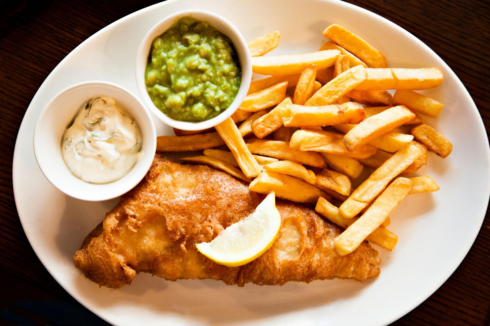
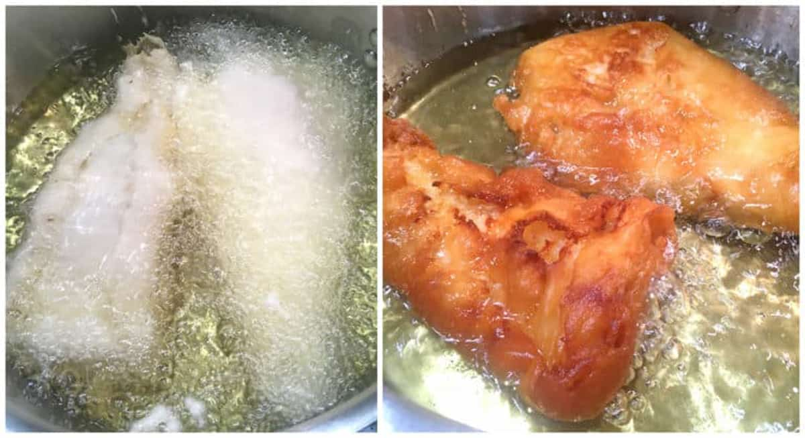
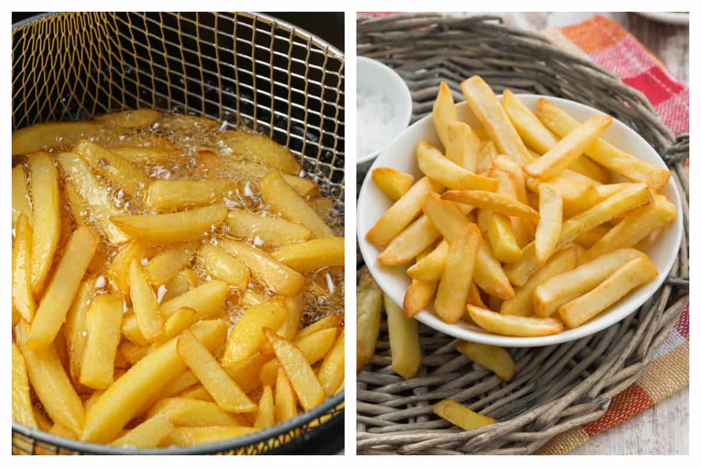
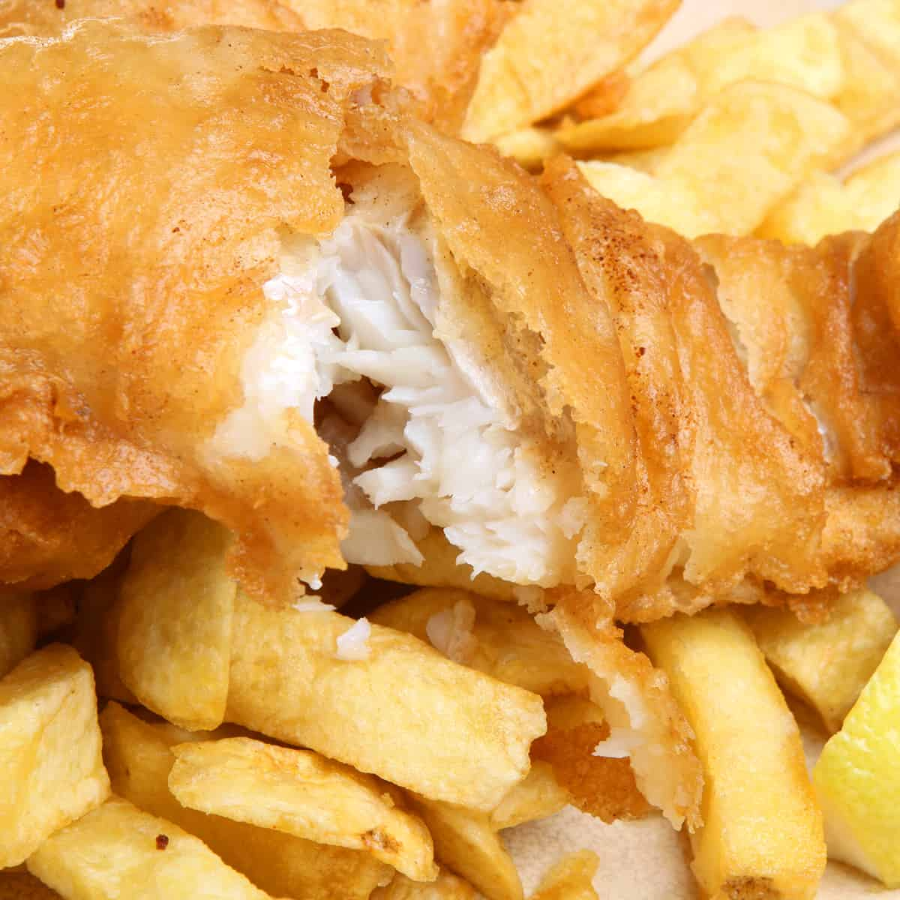

1 cup all-purpose flour
1 teaspoon baking powder
1 teaspoon salt
1 1/4 cups light beer, very cold
Extra flour for dredging, chilled
1 1/2 pounds fresh cod, haddock, or halibut, cut into 4 pieces and patted dry
Oil for frying
4 large Russet potatoes, or another high-starch, low-moisture potato
Salt for sprinkling
Oil for frying

1，Combine the flour, baking powder, and salt in a large flat bowl. Pour in the cold beer and whisk until smooth. Use the batter immediately.
2，In another large flat bowl, add some extra flour for dredging.
3，Blot the fish with paper towels to remove excess moisture. Thoroughly coat all sides of the fish in flour and shake off the excess.
4，Dip the fish into the beer batter to coat all sides, allowing some excess batter to drip off.
5，Heat oil to between 350°F and 375°F. Carefully lower the fish into the oil, waiting a few seconds before releasing it.
6，Fry for 5–8 minutes in a deep fryer, or about 2 minutes on each side in a frying pan, until golden.
7，Remove the fish with a slotted spoon. Let the oil drain, place the fish on paper towels briefly, and serve immediately.

1，Peel the potatoes and slice them thickly. Place them in a large bowl of cold water until ready to fry.
2，Heat the oven to 200°F. Heat the oil in a deep fryer or a large heavy pan until it reaches 325°F.
3，Drain the potatoes thoroughly and blot them with paper towels to remove excess water.
4，Fry the potatoes in small batches for 2–3 minutes until pale and softened.
5，Remove the potatoes with a slotted spoon and let them cool to room temperature.
6，Increase the oil temperature to 375°F. Fry the potatoes again in small batches for another 2–3 minutes, until golden.
7，Remove the chips, sprinkle with salt while hot, and keep them in the warmed oven while frying the fish.

1,Serve the fried fish with the chips.
2,Sprinkle quality British malt vinegar over the fish and chips.
3,If desired, serve with British mushy peas or tartar sauce.
4,Serve immediately while the fish is hot and crispy.
ENJOY!!